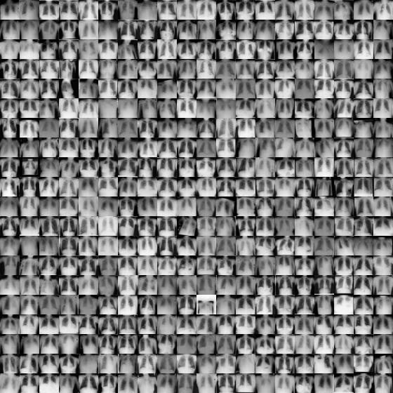
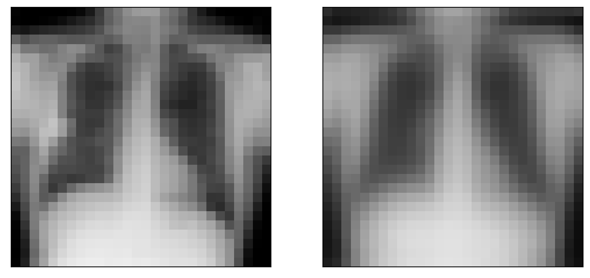
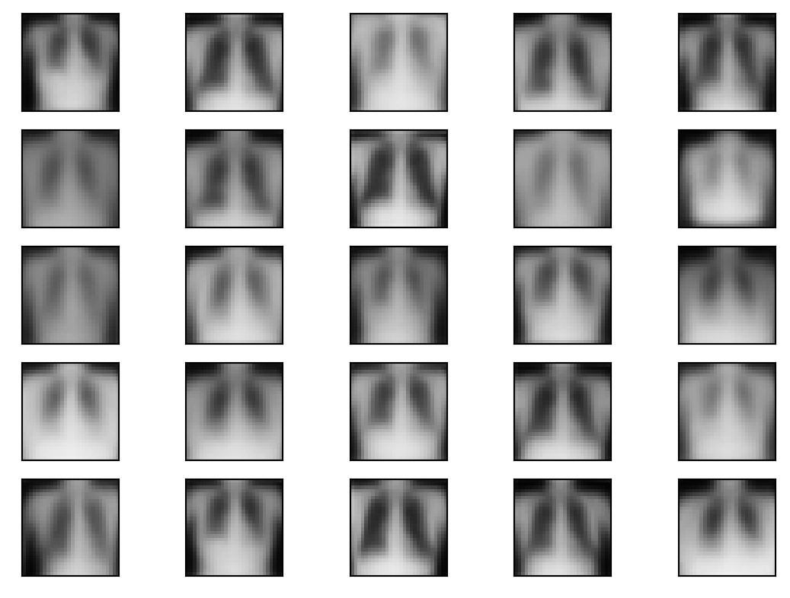

Using downloaded and verified file: /home/bcaffo/.medmnist/chestmnist.npzUsing downloaded and verified file: /home/bcaffo/.medmnist/chestmnist.npzSince we’re talking about variational autoencoders, we should probably first talk about variational Bayes (VB). VB is a scaling solution for Bayesian inference.
Bayesian inference tends to follow something like this. We have a likelihood, \(f(x | \theta)\), and a prior, \(f(\theta)\). We use Bayes rule to calculate \(f(\theta | x) = f(x|\theta)p(\theta) / f(X)\) where \(f(x) = \int f(x, \theta) d\theta\). The posterior, \(f(\theta | x)\) is our object of interest for which we will make inferences. Some problems arise. Often can’t calculate \(f(x)\), since the integral is intractable. Monte Carlo solutions generate \(\theta^{(i)} \sim f(\theta | x)\) and then approximate expectations from the posterior, \(E[h(\theta) | X]\) with \(\frac{1}{N} \sum_{i=1}^N h(\theta^{(i)})\), which converges by the law of large numbers. Sometimes we can’t simulate iid variates from \(f(\theta | x)\), so we’ll sample from \(f(\theta_k | \theta_{\sim k}, x)\) for each \(k\). This is called Gibbs sampling and generates a Markov chain that, under assumptions, yields variables that satisfy LLNs. Sometimes we can’t do the Gibbs sampler and more elaborate sampling schemes need to be done. All in all, this makes Bayes analysis challenging and often difficult to scale.
Many solutions use candidate distributions. Say, for example, \(g(z|x)\) is a distribution that we can sample from. Then notice that for samples \(Z^{(i)}\sim g(z|x)\) \[ \frac{\sum_{i=1}^N h(Z^{(i)})\frac{f(Z^{(i)|x})}{g(z^{(i)}|x)}}{\sum_{i=1}^N \frac{f(Z^{(i)|x})}{g(Z^{(i)}|x)}} = \frac{\sum_{i=1}^N h(Z^{(i)})\frac{f(Z^{(i), x})}{g(Z^{(i)}|x)}}{\sum_{i=1}^N \frac{f(Z^{(i), x})}{g(Z^{(i)}|x)}} \rightarrow \frac{E[h(Z) | x]}{E[1 | x]} = E[h(Z) | x] \] Of note we can calculate these weights, since we know \(g(z|x)\) and \(f(z,x) = f(x|z)f(z)\) is the likelihood times the prior.
Importance sampling, Gibbs sampling and other Monte Carlo techniques get combined for complicated problems. However, modern problems often present a challenge that Monte Carlo techniques cannot solve. Enter variational Bayes. Instead of fixing up samples from \(g\) to be exactly what we want, why don’t we choose \(g\) as well as possible and simply use it instead of \(f(z|x)\)?
This is where variational Bayes comes in. It turns a MC sampling problem into an optimization problem. Wikipedia has a pretty nice introduction to the topic. The most common version of variational Bayes uses the KL divergence. I.e. choose \(g\) to minimize
\[ \int g(z|x) \log\left( \frac{g(z|x)}{f(z|x)} \right) dz = E_{g(z|x)}\left[\log\left( \frac{g(Z|x)}{f(Z|x)} \right)\right] \equiv D_{KL}\{g(Z|x) || f(Z|x) \} \]
Often \(g(z|x)\) is chosen to be be \(\prod_j g(z_j|x)\), or independent in the components of \(z\). Then it can be shown that the best approximation to the posterior, in the sense of minimizing the KL divergence, sets
\[ \hat g (z_j | x) \propto \exp\left\{ E_{i\neq j}[\log\{f(Z_i | x)\}]\right\} \]
It is called variational Bayes, since it uses calculus of variations to solve this equation. Go over the Wikipedia article’s Gaussian / Gamma prior example. There you can see the derivation of the variational posterior approximation in a case where it can be done analytically. In most cases, one is left with doing it via algorithmmic optimization.
Variational autoencoders were introduced in (Kingma and Welling 2013). A really good tutorial can be found here and some sample code on MNIST can be found here. An alternate way to think about autoencoders is via variational Bayes arguments. Let \(x_i\) be a record for \(i = 1,\ldots,n\). For now, let’s drop the subscript \(i\). Define the following:
We could view any latent probability distribution as an autoencoder, where \(p_\theta(z | x)\) is the encoder and \(p_\theta(x | z)\) is the decoder. Note, if \(x\) is an image, say, then it is the distribution \(p_\theta(x | z)\) that characterizes an image given its latent representation \(z\). So, if we want an image, we need to look at the mean, posterior mode or even just a sample generation of \(p_\theta(x | z)\).
One issue with this approach is that computing is quite hard for problems of sufficient scale. Variational Bayes uses approximations instead of the actual distributions. Let \(q_\phi(z | x)\) be an approximiation of the posterior. Typical variational Bayes uses minmizers of the KL divergence. Variational autoencoders do that as well. However, VAEs tend to maximize the ELBO, evidence lower bound (ELBO). We define the ELBO as
\[ L_{\phi, \theta}(x) = \log\{p_\theta(x)\} - E_{q_\phi(z | x)} \left[\log\left( \frac{q_\phi(Z | x)}{p_\theta(Z | x)} \right)\right] = \log\{p_\theta(x)\} - D_{KL}\{q_\phi(Z | x) || p_\theta(Z | x)\} \] where \(D_{KL}(a||b)\) is the Kullback/Liebler divergence between distributions \(a\) and \(b\). The ELBO is a lower bound since the divergence term is positive and so the following inequality holds: \[ L_{\phi, \theta}(x) \leq \log\{p_\theta(x)\}. \] Where, recall, we call \(p_\theta(x)\) the evidence (in this area). That it’s a bound on the evidence suggest that maximizing it is a good thing. Regardless, we can see that maximizing ELBO obviously does two good things. First, it maximizes \(p_\theta(x)\), i.e. that the model fits the data well. Secondly, it minmizes \(E_{q_\phi(z | x)} \left[\log\left( \frac{q_\phi(Z | x)}{p_\theta(Z | X)} \right)\right]\), or the KL divergence between the approximation and what it’s approximating.
We can rewrite the ELBO as (try for HW!): \[ E_{q_\phi(z | x)} \left[\log\left( p_\theta(x | Z) \right)\right] - D_{KL}\left\{ q_\phi(Z | x) || p_\theta(Z) \right\} \]
Consider the following assumptions:
We can write \(z = \mu_\phi(x) + \mbox{Diag}(\sigma(x)) \epsilon\) where \(\epsilon\) is multivariate standard normal. Moreover, under these assumptions it can be shown that \[ D_{KL}\left\{ q_\phi(Z | x) || p_\theta(Z)\right\} = \frac{1}{2}\sum_{j=1}^J \left(1 + \log\{\sigma_{\phi,j}(x)^2\} - \mu_{\phi,j}(x)^2 - \sigma_{\phi,j}(x)^2 \right) \] where a subscript \(j\) refers to the vector component. If we have a Monte Carlo sample, \(\epsilon^{(l)}\) then we can approximate it as follows:
\[ \begin{aligned} & E_{q_\phi(z | x)} \left[\log\left\{ p_\theta(x | Z) \right\}\right] \\ \approx & \frac{1}{L} \sum_{l=1}^L \log\{ p_\theta(x | z = \mu_\phi(x) + \mbox{Diag}(\sigma_\phi(x) \epsilon^{(l)})\} \\ = & -\frac{1}{2L} \sum_{l=1}^L ||x - \theta_1\{ \mu_\phi(x) + \mbox{Diag}(\sigma_\phi(x) \epsilon^{(l)}\}||^2 / \theta_2 \\ \end{aligned} \]
Both of these expressions are the contributions of one row, \(x\). They get summed over \(x\) to obtain the full ELBO. Here we can see why expressing \(z = \mu_\phi(x) + \mbox{Diag}(\sigma_\phi(x) \epsilon^{(l)\) is important. This way our parameters, \(\mu_\phi\) and \(\sigma_\phi\) are in the loss function, not hidden in \(z\). The backprop algorithm doesn’t know how to take a derivative with respect to a realized random variable. It can, however, differentiate \(\mu_\phi(x) + \mbox{Diag}(\sigma_\phi(x) \epsilon\) for realized \(\epsilon\).
We’re omitting our imports and gettng the data. See the qmd file for the full list. Here we have epochs as 10 and batch size as 128.
Using downloaded and verified file: /home/bcaffo/.medmnist/chestmnist.npzUsing downloaded and verified file: /home/bcaffo/.medmnist/chestmnist.npzHere’s a montage of the training data.
/home/bcaffo/miniconda3/envs/ds4bio/lib/python3.10/site-packages/medmnist/utils.py:25: FutureWarning:
`multichannel` is a deprecated argument name for `montage`. It will be removed in version 1.0. Please use `channel_axis` instead.

Here’s the shape of the dataset. Note, \(28^2=784\) is the vectorized size. Also, as these images are gray scale so that there’s only one color channel. We’re not going to use any convolutional layers or anything like that. We’ll just flatten everything.
temp, _ = next(iter(train_dataset))
temp = temp.numpy()
[temp.shape, temp.max(), temp.min()][(1, 28, 28), 0.93333334, 0.015686275]Let’s use Jackson Kang’s wonderful VAE tutorial from here.
x_dim = 784 ## This is 28**2, the length of the vectorized images
hidden_dim = 400
latent_dim = 200First we define the encoder. Remember, the encoder is \(q_\phi(z | x)\), which we are assuming is multivariate independent normals with means and variances depending on \(x\). Notice this takes in the input, \(x\) and uses a NN to estimate \(\mu_\phi(x)\) and \(\log(\sigma^2_\phi(x))\).
class Encoder(nn.Module):
def __init__(self, input_dim, hidden_dim, latent_dim):
super(Encoder, self).__init__()
self.FC_input = nn.Linear(input_dim, hidden_dim)
self.FC_input2 = nn.Linear(hidden_dim, hidden_dim)
self.FC_mean = nn.Linear(hidden_dim, latent_dim)
self.FC_var = nn.Linear (hidden_dim, latent_dim)
self.LeakyReLU = nn.LeakyReLU(0.2)
self.training = True
def forward(self, x):
h_ = self.LeakyReLU(self.FC_input(x))
h_ = self.LeakyReLU(self.FC_input2(h_))
mean = self.FC_mean(h_)
log_var = self.FC_var(h_)
return mean, log_varNext we define our decoder. Remember our decoder is \(p_\theta(x | z)\). However, the distribution will be fully defined in the loss function. Instead, we’re just taking in \(z\) and giving out \(\hat x = \theta_1(z)\).
class Decoder(nn.Module):
def __init__(self, latent_dim, hidden_dim, output_dim):
super(Decoder, self).__init__()
self.FC_hidden = nn.Linear(latent_dim, hidden_dim)
self.FC_hidden2 = nn.Linear(hidden_dim, hidden_dim)
self.FC_output = nn.Linear(hidden_dim, output_dim)
self.LeakyReLU = nn.LeakyReLU(0.2)
def forward(self, x):
h = self.LeakyReLU(self.FC_hidden(x))
h = self.LeakyReLU(self.FC_hidden2(h))
x_hat = torch.sigmoid(self.FC_output(h))
return x_hatTo run a datapoint, \(x\) through the model. First the encoder generates \(\mu_phi(x)\) and \(\sigma_\phi(x)\). Next, it generates \(z\) from \(q_\phi(z|x)\) using a reparameterization, then passes \(z\) through the decoder, \(p_\theta(x | z)\).
class Model(nn.Module):
def __init__(self, Encoder, Decoder):
super(Model, self).__init__()
self.Encoder = Encoder
self.Decoder = Decoder
def forward(self, x):
mean, log_var = self.Encoder(x)
sd = torch.exp(0.5 * log_var)
z = mean + sd * torch.randn_like(sd)
x_hat = self.Decoder(z)
return x_hat, mean, log_varencoder = Encoder(input_dim=x_dim, hidden_dim=hidden_dim, latent_dim=latent_dim)
decoder = Decoder(latent_dim=latent_dim, hidden_dim = hidden_dim, output_dim = x_dim)
model = Model(Encoder=encoder, Decoder=decoder)The ELBO is the sum of the reproduction loss and the KL divergence.
def loss_function(x, x_hat, mean, log_var):
reproduction_loss = nn.functional.mse_loss(x_hat, x, reduction='sum')
KLD = - 0.5 * torch.sum(1+ log_var - mean.pow(2) - log_var.exp())
return reproduction_loss + KLD
optimizer = Adam(model.parameters(), lr=lr)model.train()
for epoch in range(NUM_EPOCHS):
for batch_idx, (x, _) in enumerate(train_loader):
## Note unlike the mnist data, the final batch isn't always the same size
batch_size = x.shape[0]
x = x.view(batch_size, x_dim)
optimizer.zero_grad()
x_hat, mean, log_var = model(x)
loss = loss_function(x, x_hat, mean, log_var)
loss.backward()
optimizer.step()model.eval()
#with torch.no_grad():
x, _ = next(iter(test_loader))
batch_size = x.shape[0]
x = x.view(batch_size, x_dim)
x_hat, _, _ = model(x)
x = x.view(batch_size, 28, 28)
x_hat = x_hat.view(batch_size, 28, 28)
plt.figure(figsize=[10, 5])
idx = 0
plt.subplot(1, 2, 1)
plt.imshow(x[idx].numpy(), cmap='gray', vmin = 0, vmax = 1)
plt.xticks([])
plt.yticks([])
plt.subplot(1, 2, 2)
plt.imshow(x_hat[idx].detach().numpy(), cmap='gray', vmin = 0, vmax = 1)
plt.xticks([])
plt.yticks([])([], [])
no_im = 5
noise = torch.randn(no_im ** 2, latent_dim)
generated_images = decoder(noise)
im = generated_images.view(no_im ** 2, 28, 28)
for i in range(no_im ** 2):
plt.subplot(5, 5, i+1)
plt.imshow(im[i].detach().numpy(), cmap='gray', vmin = 0, vmax = 1)
plt.xticks([])
plt.yticks([])